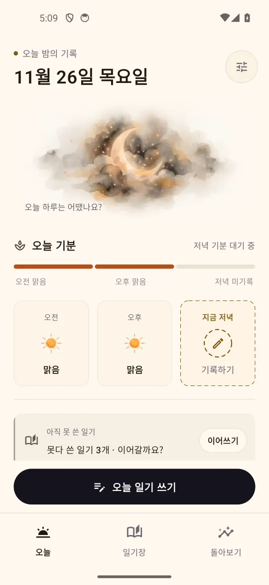
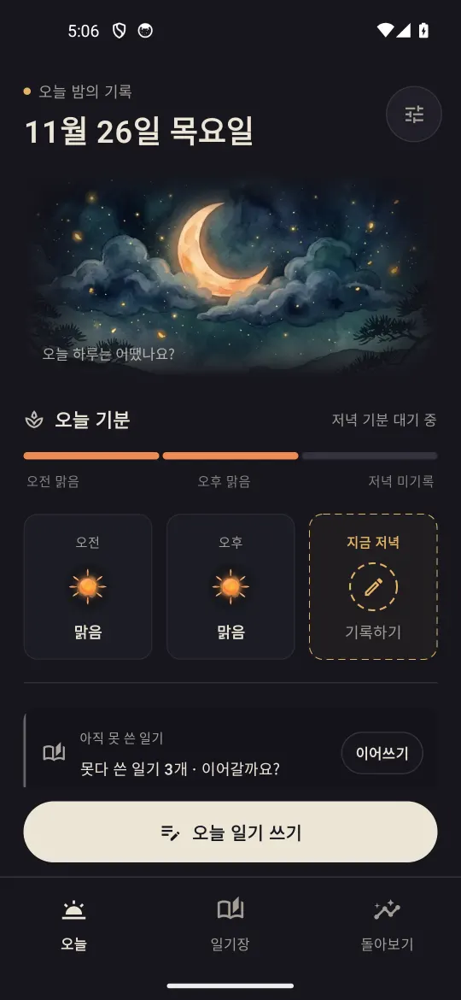

밤에 펴는 노트
특별하지 않았더라도,
하루를 기록하고 싶은 당신에게.
오늘 다녀온 곳, 걸은 걸음, 남겨 둔 기분과 메모를 모아 밤마다 일기를 먼저 써 둘게요. 읽어 보고 조금 고치면 오늘의 일기가 돼요.
밤노트 받기무료 · 광고 없음
오전엔 조금 가라앉은 채로 하루를 시작했다. 주간 회의를 마치고 점심에는 친구와 통화했다.
오후에는 서초동 맛집에서 한 시간을 보냈다. 걷기를 40분 했고, 모두 9,120걸음을 걸었다.
저녁이 되자 오전보다 마음이 한결 가벼워졌다.
예시예요. 실제로는 그날 남은 기록으로만 쓰고, 없었던 일은 지어내지 않아요. 글을 눌러 마음대로 고칠 수 있어요.


낮에는 밝게, 밤 10시부터는 어둡게 바뀌어요. 하나로 고정할 수도 있어요.
오전 · 오후 · 저녁, 그때 기분에 맞는 날씨 하나만 골라요. 알림에서 바로 남길 수도 있어요.
휴대폰 캘린더의 오늘 일정(반복 일정 포함)을 시간 순서대로 일기에 담아요. 보고 싶지 않은 캘린더는 꺼 둘 수 있어요.
헬스 커넥트에서 오늘 걸음 수와 운동 종류 · 시간을 가져와요. 삼성 헬스 같은 앱의 기록이 그대로 이어지고, 평소보다 많이 걸었는지도 알려 줘요.
머문 곳을 「역삼1동」 같은 동네 이름으로 묶고, 처음 가 본 곳도 알려 줘요. 「집」 · 「회사」 처럼 좋아하는 이름을 붙이고, 오늘 지나온 길을 지도로 다시 봐요.
오늘 찍은 사진의 시간과 장수, 찍은 곳을 기록으로 담아요. 메모에 사진을 붙여 둘 수도 있어요.
모두 고를 수 있어요. 허락하지 않은 기록은 빼고, 기분과 메모만으로도 일기를 써요. 동네 이름은 앱에 담긴 지도 자료로 휴대폰 안에서 찾아서, 내 위치가 밖으로 나가지 않아요.
저녁이 되면 살짝 알려 드려요. 열어 보면 오늘의 일기가 기다리고 있어요. 마음에 들면 저장, 아니면 다른 문장으로.
담백한 일기체, 다정한 해요체, 친구 반말, 조선시대 일기. 원하는 말투를 골라요.
「오늘 한 줄 남기기」 · 「오늘의 한 마디」 위젯으로 앱을 열지 않고도 한 줄을 남겨요.
틈틈이 적은 한 줄을 일기 속 문장으로 자연스럽게 풀어 써요.
AI가 되는 휴대폰이라면 일기를 한층 풍성하게 다시 써요. 글은 휴대폰 안에서만 만들어져요.
종교를 고르면 그날에 맞춘 기도 한 줄을, 아니라면 하루를 마무리하는 한 줄을 일기 아래 남겨요.
한 주, 한 달 동안의 기분과 걸음, 자주 간 곳을 한눈에 모아 보고, 그 기간의 기분에 맞춘 한마디로 마무리해요.
지문이나 화면 잠금으로 일기를 잠가요. 낮엔 밝게, 밤엔 어둡게 시간 따라 바뀌고, 하나로 고정할 수도 있어요.
갤럭시 Z 폴드처럼 화면을 펼치면 옆 메뉴와 두 칸 화면으로 넓게 써요.
안드로이드 11 이상 휴대폰에서 쓸 수 있어요.
일기와 기분, 메모, 다녀온 곳은 모두 이 휴대폰에만 남아요. 누구도 대신 모아 가지 않아요.
휴대폰을 바꿀 때는 설정에서 백업 파일을 만들어 새 휴대폰에서 불러오면 그대로 이어서 쓸 수 있어요.
어떤 정보를 쓰는지 궁금하다면 데이터 사용 안내를 읽어 보세요.